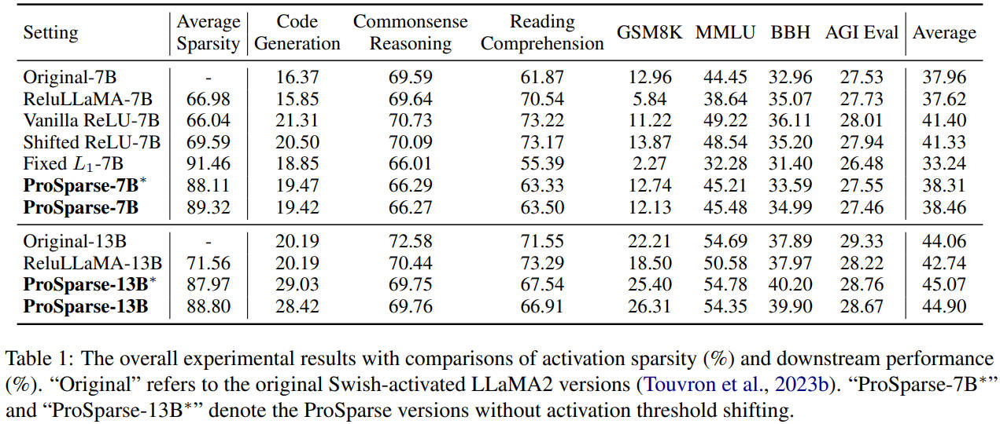

ProSparse: Introducing and Enhancing Intrinsic Activation Sparsity within Large Language Models

Method
There are three stages of ProSparse: 1. ReLU replacement - Replace Non-ReLU activation with ReLU and finetune the model. - However, this stage usually does not achieve satisfactory sparsity. 2. Progressive sparsity regularization - Apply sparsity regularization to the output of FFN. - Progressively increase the regularization factor for better performace. - Enhance higher sparsity. 3. Activation threshold shifting - Modify the vanilla ReLU with FAT ReLU.
{kind=link}
This paper provides two models prosparse-llama-2-7b and prosparse-llama-2-13b in Huggingface.
Experiment
Real accelerate on hardware
- Approximate strategy
- A predictor to predict the position of activation sparse.
- However, the final performance depends on the quality of the predictor and the predictor itself introduce an addional overhead.
- Test on PowerInfer, a c++ library.
- Accurate strategy
- GPU kernel
- operation fusion
- coalesced memory access
- vectorization
- GPU kernel
Training Dataset
- Pretraining Dataset
- StarCoder
- Wikipedia
- Pile
- other collected data.
- Instruction tuning dataset
- UltraChat
- multiple-choice QA data of P3
- PAQ
- Unnatural Instructions
- Flan
- Super-Natural Instructions
- other collected data.
Prosparse achieves better result than Original model. I think the orginal models do not adopt Instruction Finetuning, but Prosparse does. 
{kind=link}
{kind=link}